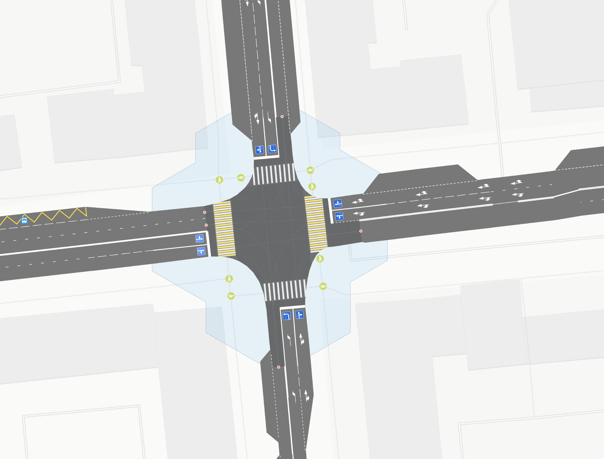
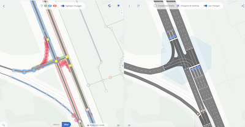
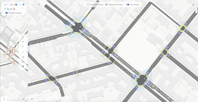
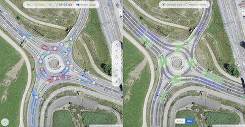

Mapping intersections and roads is a task for the brave.
Road network and infrastructure editor in OSM
Road network editing.
The tool primarily focuses on visual representation of intersection structures, roads (including lanes, pockets, tram tracks, parking), and road markings. This allows the user to add objects and tag data more correctly, precisely specifying: - coordinates of important points, width, connectivity and position of center lines; - attributes (parking, stops, traffic lights, pedestrian crossings).
Derivative data generator.
The system is capable of creating new objects (polygons, markings, graphs, routes). This data can be exported to external editors for further refinement by the mapper, who in turn can submit them to OSM — or use them at their discretion.
Collaborative use.
The editor also provides capabilities for storing and sharing changesets, similar to the OSMCha service, but with a focus on roads. This allows quick assessment of what exactly was changed ("before — after"). Unlike OSMCha, publishing edits to OSM is not mandatory for this.

Inside
OSMPIE is heuristic rendering of maximum quality and detail, with minimal semantic model of tags and objects
Advantages and benefits
The editor works as a "mirror": if an object is modeled inaccurately or with errors, it becomes noticeable immediately.
The OSMPIE renderer functions as a complex visual validator. If the rendered result looks imperfect or doesn't resemble satellite imagery, it's necessary to add tags or correct existing attributes.
Convenient functional interface that specializes in adding tags for roads, intersections and everything related to transport.
Use osmpie for correct and accurate mapping of roads in OSM, osmpie will act as an assistant and validator
Send a link to a colleague for review before applying the changeset or for joint discussions.
Download all render results in GeoJSON or load into your GIS (QGIS for example), you can even use API or direct link. For your research work or personal projects.
You can get both a topological model of lanes with additional attributes of each lane, point and connection, and the final - areal model of the road with markings.
Examples of real bakes for intersections
We have prepared a small article that contains all the most important things you need to know to prepare a perfect intersection
Simple intersection 2 left turn lanes

Berlin Sonnenallee

Turbo roundabout (placement: transition)

Share results and apply in your projects
All objects available as a result of generation by the osmpie.org service (images, geoJson, areal objects of roads and intersections, markings, etc.) are open data and freely available for use in third-party projects under the ODBL license, it is only necessary to explicitly and visibly indicate attribution to the site osmpie.org and openstreetmap.org as data sources.
Open directly in browser.
Try surface query with CLI
curl -k -o surface.json https://osmpie.org/ave-geo/bakes/transform/8e6d87b4-3f58-4876-9e5e-1c0d7469f0e/surface/geojson
Try skeleton query with CLI
curl -k -o skeleton.json https://osmpie.org/ave-geo/bakes/transform/8e6d87b4-3f58-4876-9e5e-1c0d7469f0e/skeleton/geojson
In addition to exporting in GeoJSON format files, you can access the OSMPIE API directly to get generation results for your bakes just in time.
Look intersection inside
We have prepared for you a map of intersections of one small town, where you can see them both "from the inside" and "from the outside". Explore the changesets that allowed building this map
Какие тэги поддерживает OSMPIE
Для более точного картирования перекрестков их свойств и функций мы предлагаем несколько новых тегов junction:* и расширения применения существующих.
Road & junction tags
Cуществующие теги OSM и предложения обеспечивают 90-95% функциональности, необходимой для комплексного картирования и рендеринга дорог. Вы можете ознакомиться с глоссарием тэгов, которые использует OSMPIE при рендере.
New tags proposal
Нам понадобилось несколько лет, чтобы минимизировать и формализовать набор тегов, чтобы сделать их применение простым и понятным, и соответствующей текущей идеологии тэгирования (см *:lanes:*), насколько это вообще возможно.
Applications and future work
Utilize our tools to develop your concepts and bring your vision to life. Once complete, effortlessly share your creations.